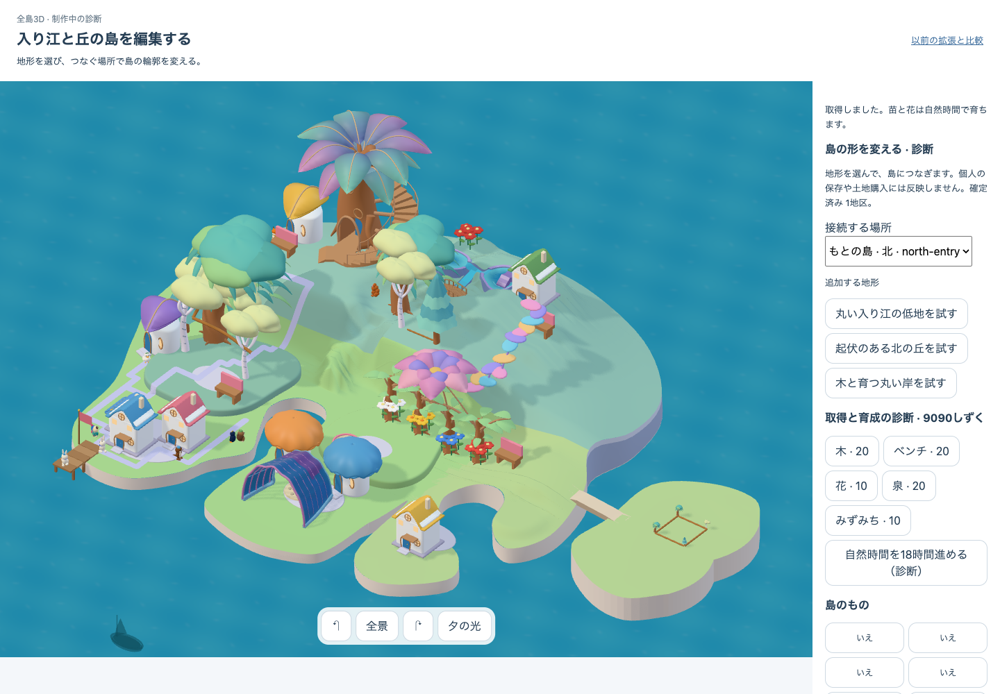
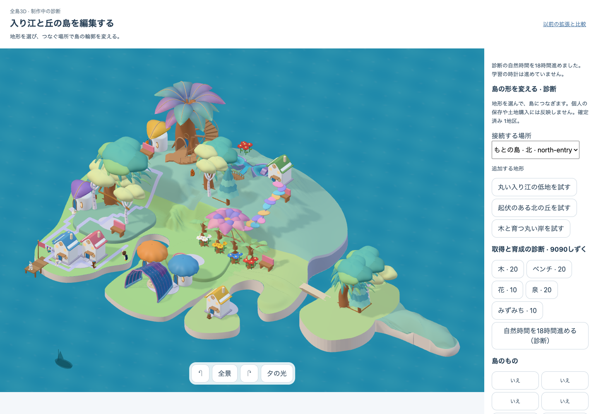
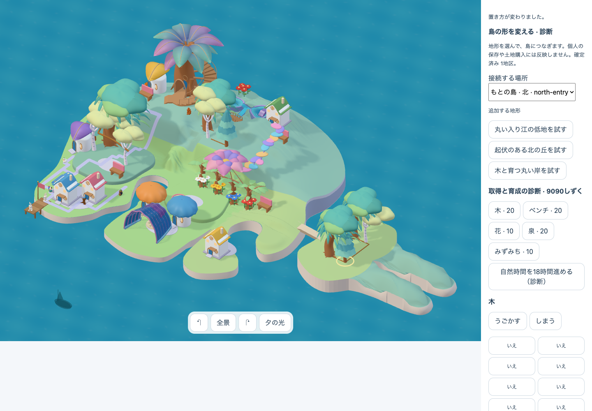
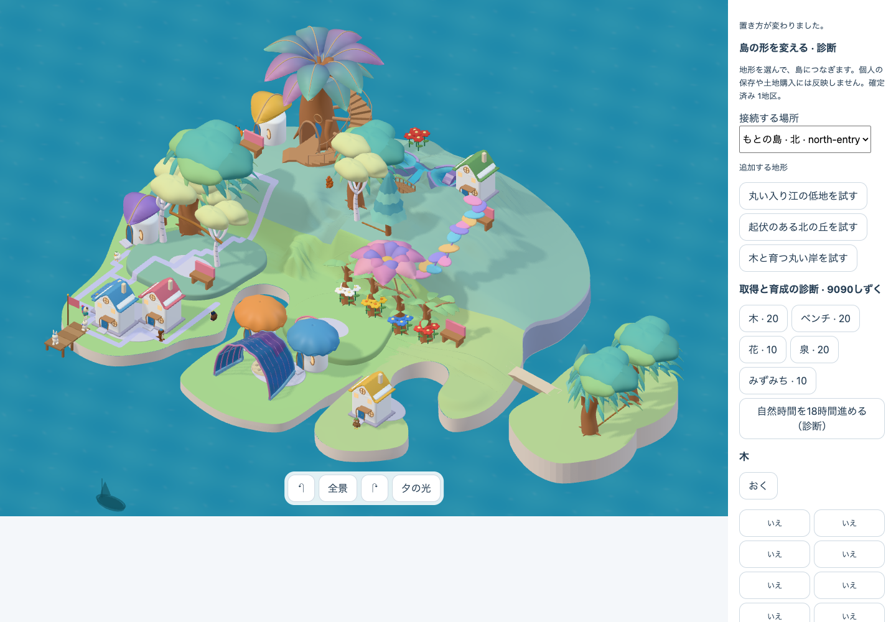
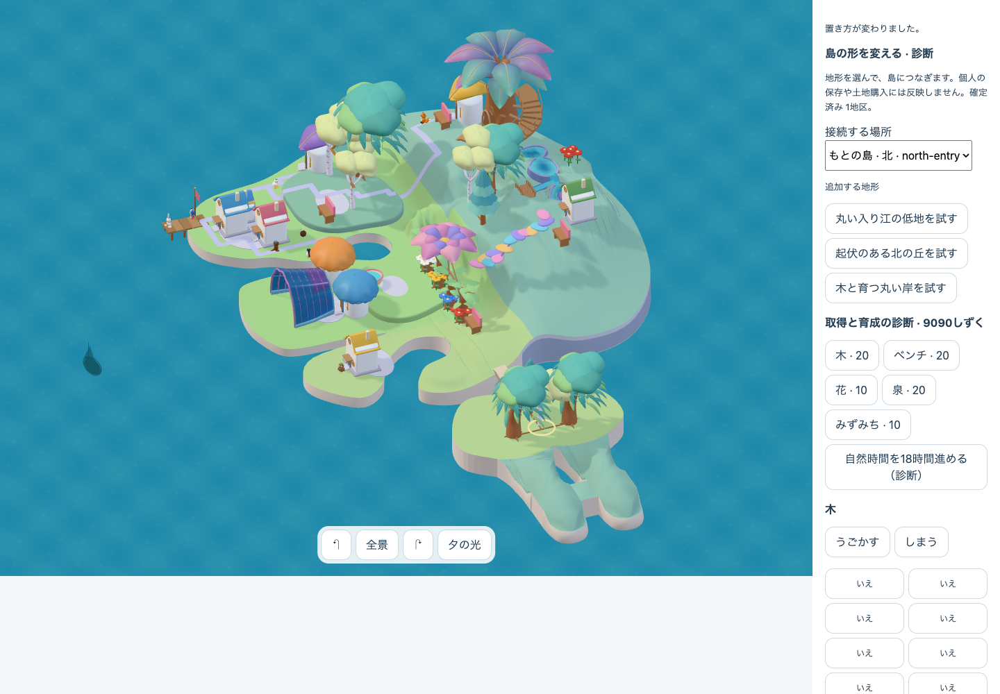
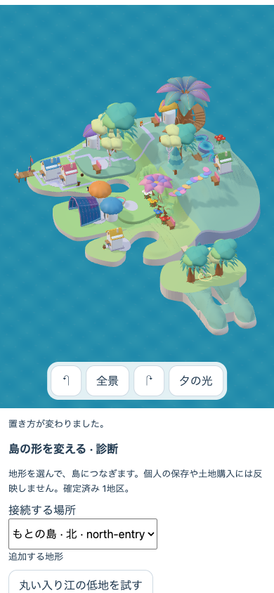
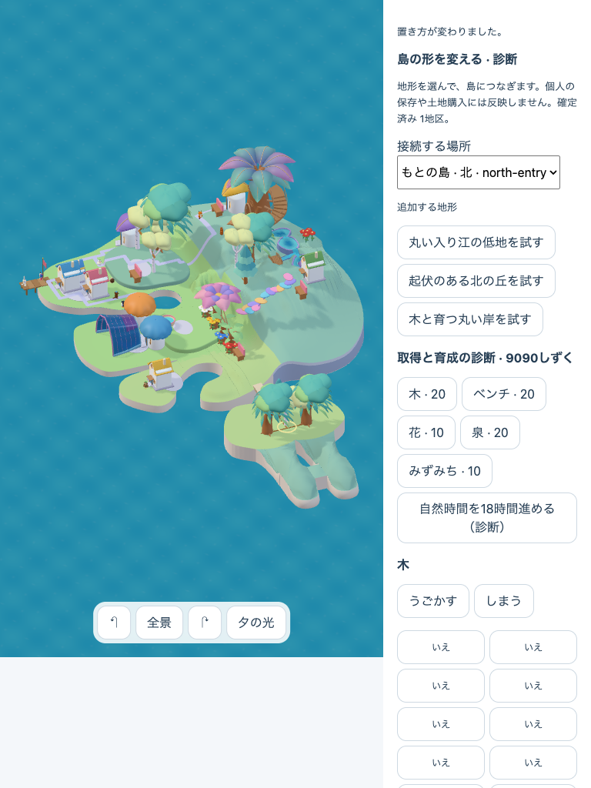

1440 × 1000 · patches 0 / connections 0authored-world:d6c52e033ff5f5fb

1440 × 1000 · patches 1 / connections 0authored-world:d4527e65fcc55a19

1440 × 1000 · patches 2 / connections 0authored-world:7887b8ccbf95e78a
1440 × 1000 · patches 2 / connections 1authored-world:dd305dfe00eb79b4

1440 × 1000 · patches 0 / connections 0authored-world:28349c0603378fcc
1440 × 1000 · patches 2 / connections 1authored-world:dd305dfe00eb79b4

1440 × 1000 · patches 2 / connections 1authored-world:dd305dfe00eb79b4

390 × 844 · patches 2 / connections 1authored-world:dd305dfe00eb79b4

768 × 1024 · patches 2 / connections 1authored-world:dd305dfe00eb79b4